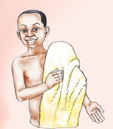
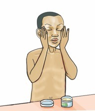

Question



Question
What have you learnt from pictures 1-8?
Sing the song about body cleanliness and answer the questions
that follow.


Song
Butterfly butterfly
Open the door
Look there
I wake up early in the morning
I clean my mouth to avoid bad smell
I wash my face to look smart
I clean my ears to avoid germs
I bathe so as to look smart
I comb my hair so as to look smart
I put on my clothes
I go to school looking smart.